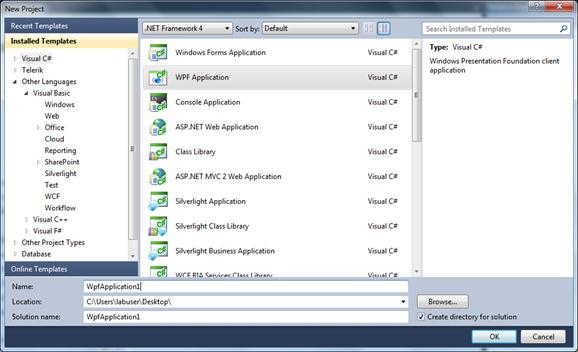
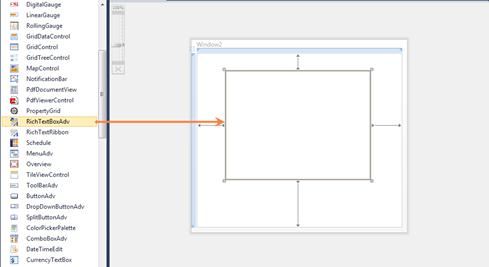

To create a RichTextBoxAdv instance in Visual Studio:
1. Open Visual Studio.
2. On the File menu, select New, and then select Project. The New Project dialog box is displayed.

Figure 908: File Menu
3. In the New Project dialog box, select WPF Application.
4. In the Name field, type the name of the project.
5. Click OK.

Figure 909: New Project Dialog Box
6. Drag the RichTextBoxAdv control from the Toolbox window to the Design View. An instance of the RichTextBoxAdv control is created in Design view.

Figure 910: RichTextBoxAdv Control after Being Dragged to Design View